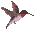
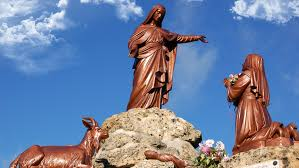

"NOSSA SENHORA DE LAUS"


"ENCANTADOR EMPENHO DA SANTÍSSIMA VIRGEM MARIA, PARA CONVERTER OS PECADORES".
=ÍNDICE=
- "ESCOLHIDA POR DEUS"
- "DIMENSÃO INFINITA DO AMOR"
- "O PARAÍSO ACOLHE A BOA ALMA"
- "IMAGENS + ENDEREÇO"


 -
"O PARAÍSO ACOLHE A BOA ALMA"
-
"O PARAÍSO ACOLHE A BOA ALMA"